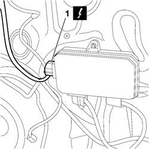
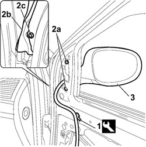

7005R30 ELECTRICALLY CONTROLLED DOOR MIRROR (ONE) - R+R
- Path
- Procedures > 70 FITTINGS > 7005 PASSENGER COMPARTMENT FRONT SIDE DOORS > 7005R FRONT DOOR MIRRORS > 7005R30 ELECTRICALLY CONTROLLED DOOR MIRROR (ONE) - R+R
- Kind
- repair procedure (removal / refitting; the operation number is the code)
- Applies to
- all engines; all production periods
- Interactive page
- https://sloeber94.github.io/elrnDB-fCrm/en/#/194000883
Applies to: all engines; all production periods
 Removing
Removing
 Refitting
Refitting- Open the front side door.
- Turn the key OFF and disconnect the battery negative terminal
Description | Connector | |
|---|---|---|
BATTERY |
Op. 7005E10 FRONT SIDE DOOR INTERIOR PANEL - R.R.
1. Disconnect the electrical connection from the door node mirror.
Description | Connector | |
|---|---|---|
1 | DRIVER'S DOOR CONTROL UNIT (NPG) |
Description | Connector | |
|---|---|---|
1 | PASSENGER SIDE DOOR JUNCTION UNIT (NPP) |

Applies to: all engines; all production periods
1. Using the special tool, prise up the electrical wiring retaining clips.
Tool | Description | Function | Validity |
|---|---|---|---|
1878077000 | Knife | Retainer removal |
2. Undo the fixing bolt (2a), lift seal (2b) and unscrew bolt (2c).
3. Remove the door mirror, carefully withdrawing the electrical wiring.

Applies to: all engines; all production periods
Refitting
Removing- Position the door mirror and secure with the bolts after restoring the route of the electrical wiring.
- Fit the electrical wiring retaining spring.
- Connect the mirror electrical connection to the door node.
Description | Connector | |
|---|---|---|
DRIVER'S DOOR CONTROL UNIT (NPG) |
Description | Connector | |
|---|---|---|
PASSENGER SIDE DOOR JUNCTION UNIT (NPP) |
Op. 7005E10 FRONT SIDE DOOR INTERIOR PANEL - R.R.
- Connect the negative battery terminal.
Description | Connector | |
|---|---|---|
BATTERY |
Topics linked from this page (4)
- 7005E10 FRONT SIDE DOOR INTERIOR PANEL - R.R.
- A001 BATTERY
- M066 DRIVER'S DOOR CONTROL UNIT (NPG)
- M067 PASSENGER DOOR CONTROL UNIT (NPP)
Topics that link to this page (7)
- J041 LEFT DOOR MIRROR ELECTRICAL ADJUSTMENT NOT WORKING
- J042 RIGHT DOOR MIRROR ELECTRICAL ADJUSTMENT NOT WORKING
- T001 WIND NOISE FROM THE FRONT DOORS
- 7005OA FRONT DOOR WIND NOISE LOCALISATION
- 7005D18 FRONT SIDE DOOR DESCENDING WINDOW GLASS CHANNEL (ONE), LEFT OR RIGHT - R.R
- 7005D26 FRONT SIDE DESCENDING WINDOW GLASS SCRAPER (OUTER) (ONE), LEFT OR RIGHT- R.R
- 7205E36 STRIPPING FRONT SIDE DOOR